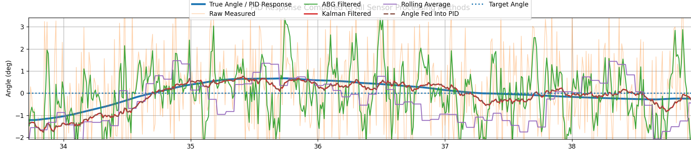

Controls Simulation Project
Roll Stabilization Simulation
Created a Python simulation to compare PID control, noisy sensor measurements, rolling averages, and filtering approaches for angular stabilization.
Objective
I was interested in learning more about the effects of different filters and how they can help
a noisy signal. By starting with the raw data and a simple rolling average I was able to understand the
strengths and weakness of one of the simplest fixes.
While researching to understand the Kalman filter I stumbled upon the
alpha - beta - gamma (a-b-g) filter and thought
it would be a good middle ground in terms of usefullness and ease of application for this project.
The final step was to compare the effects of each filtering technique side by side to allow for proper comparison.
My Contribution
- Built a Python physics simulation for angular motion.
- Implemented PID control with proportional, integral, and derivative terms.
- Added noisy measurement behavior to simulate imperfect sensors.
- Compared raw readings, rolling averages, and filter-based estimates.
- Generated plots to evaluate system response and controller behavior.
Technical Details
- Language: Python
- Libraries: NumPy, Matplotlib
- Concepts: PID, damping, disturbance response, filtering, sensor noise
Results

In this chart I have plotted the different angle readings as well as the PID response to the Kalman filter. Both the true angle of the simulation as well as the noisy sensor data are plotted as a reference for what the filters will be judged off of.
As you can see the Kalman filter had the best results. The rolling average was accurate but generally lagged behing the true value. The a-b-g filter does struggle with the noise, some of this could be fixed with finer tuning but that has yet to occur.